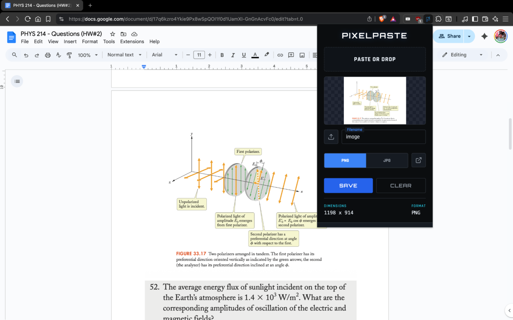
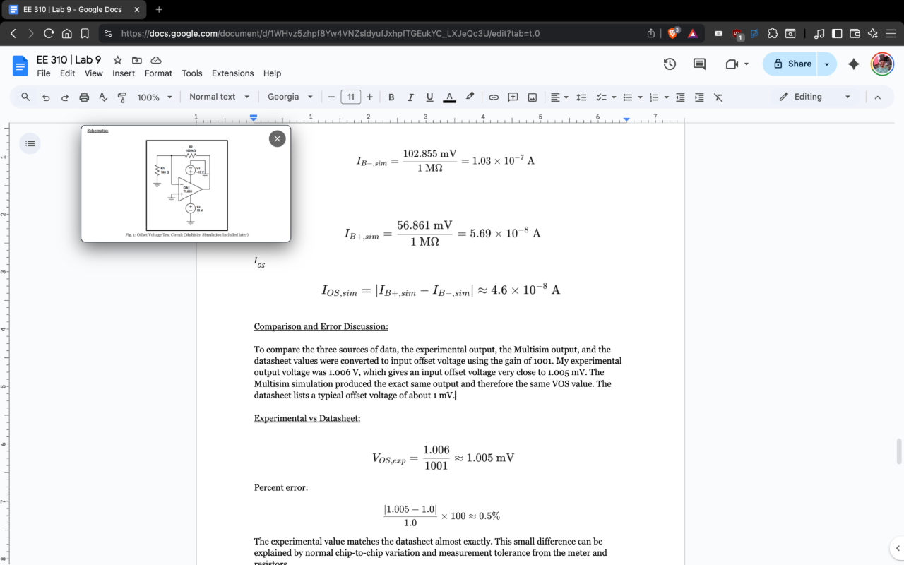

Stop fighting the Save-As dialog box every time you take a screenshot.
The modern web workflow is broken. We spend our lives taking screenshots, but the bridge between copying an image and saving a file is filled with friction. Most of us are forced to open multiple windows or use "online" tools that compromise privacy just to perform a simple conversion.
PixelPaste fixes this. It is a lightweight browser utility that creates an instant loop: Ctrl+V to paste, type a name, and hit Enter to save. That's it.
What is the fastest way to save clipboard images?
The fastest method is to eliminate the middleman. Traditional methods require you to open an image viewer, select a folder, and click through a series of UI prompts. With PixelPaste, the clipboard data extraction happens in your browser’s local memory.
By using the PixelPaste Chrome Extension, you turn your browser into a high-speed asset manager. Whether you need a lossless PNG for a presentation or a compressed JPG for a quick message, it handles the conversion instantly and 100% offline.
Can I reference screenshots while I code?
Standard image viewers disappear the moment you click back into your editor. PixelPaste includes a Picture-in-Picture (PiP) mode that keeps your visual reference floating above every other window.
This is a game-changer for developers and designers who need to match pixels without constant context switching. It’s a private screenshot utility designed for professionals who value speed.
Questions people ask:
- How to save clipboard as png without online tools?
- How to extract image from clipboard in browser?
- Best chrome extension for clipboard asset management?
- Private offline clipboard to file converter.
LSI Keywords: Clipboard API, visual asset organization, web-based image capture, Thomas Askharoun, browser productivity tool, instant PNG creator.